Rabbitmq : publish, consume, cluster
- Running an instance of RabbitMQ with Docker
- Publish a message from a node application
- Post a message from a go application
- Consume these messages from another node application
- Create a cluster of 3 instances with automatic replication
- Test the cluster by simulating an instance crash
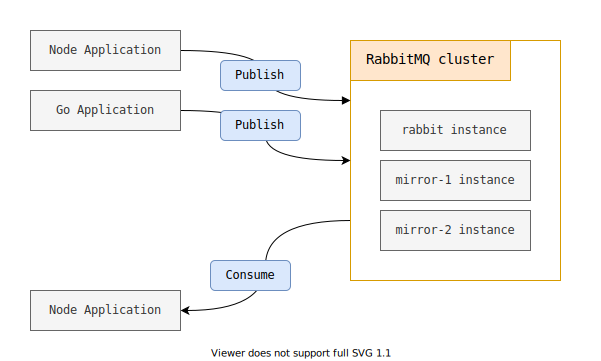
Install and setup
Get the code from this github repository :
# download the code
$ git clone \
--depth 1 \
https://github.com/jeromedecoster/note-rabbitmq-publish-consume-cluster.git \
/tmp/note
# cd
$ cd /tmp/note
To setup the project, run the following command :
# docker pull, npm install, docker network
$ make setup
This project will make several docker containers communicate together :
- 2 publisher apps
- 1 consumer app
- 1 to 3 instances of RabbitMQ
In order for these containers to communicate with each other, the make setup command created a Bridge Network named rabbitmq :
$ docker network create rabbitmq
Start RabbitMQ
We start an instance of Rabbitmq with docker :
# run single rabbitmq
$ make run-rabbitmq-single
This command executes :
$ docker run \
--detach \
--rm \
--net rabbitmq \
--publish 8000:15672 \
--hostname rabbit \
--name rabbit \
rabbitmq:3-management
After a while, you can access the RabbitMQ interface from http://localhost:8000 :
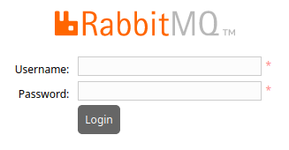
We use :
- Username :
guest - Password :
guest
We arrive on the following interface :
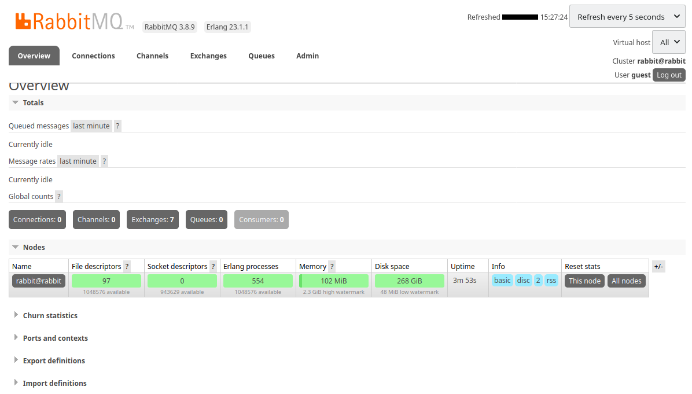
Publish and consume
The project uses 3 applications :
- A Node application to publish a message
- A Go application to publish a message
- A Node application to consume messages
We build the 3 docker images of these applications :
# build the images
$ make build
We will publish a message with the Node application :
- The application is an express server that waits for messages on
localhost:3000/publish/:message - The application uses the amqplib module to interact with RabbitMQ
const app = express()
const HOST = process.env.RABBIT_HOST
const PORT = process.env.RABBIT_PORT
const USERNAME = process.env.RABBIT_USERNAME
const PASSWORD = process.env.RABBIT_PASSWORD;
const open = amqplib.connect(`amqp://${USERNAME}:${PASSWORD}@${HOST}:${PORT}/`)
let channel
open
.then(conn => conn.createChannel())
.then(ch => {
channel = ch
ch.assertQueue('publisher')
})
// curl -X POST http://localhost:3000/publish/hello
app.post('/publish/:message', (req, res) => {
console.log(`message: ${req.params.message}`)
channel.sendToQueue('publisher', Buffer.from(req.params.message))
res.send('')
})
We launch the server :
$ make run-node-publisher
In a new terminal window :
$ curl -X POST http://localhost:3000/publish/hello
The message has been received :
We will publish a message with the Go application :
var HOST = os.Getenv("RABBIT_HOST")
var PORT = os.Getenv("RABBIT_PORT")
var USERNAME = os.Getenv("RABBIT_USERNAME")
var PASSWORD = os.Getenv("RABBIT_PASSWORD")
func main() {
router := httprouter.New()
// curl -X POST http://localhost:4000/publish/world
router.POST("/publish/:message", func(w http.ResponseWriter, r *http.Request, p httprouter.Params){
submit(w,r,p)
})
fmt.Println("Listening on port 4000")
log.Fatal(http.ListenAndServe(":4000", router))
}
func submit(writer http.ResponseWriter, request *http.Request, p httprouter.Params) {
message := p.ByName("message")
fmt.Println("message: " + message)
conn, err := amqp.Dial("amqp://" + USERNAME + ":" + PASSWORD + "@" + HOST + ":" + PORT + "/")
ch, err := conn.Channel()
q, err := ch.QueueDeclare(
"publisher", // name
true, // durable
false, // delete when unused
false, // exclusive
false, // no-wait
nil, // arguments
)
err = ch.Publish(
"", // exchange
q.Name, // routing key
false, // mandatory
false, // immediate
amqp.Publishing {
ContentType: "text/plain",
Body: []byte(message),
})
}
We launch the server :
$ make run-go-publisher
In a new terminal window :
$ curl -X POST http://localhost:4000/publish/world
The new message has been received :
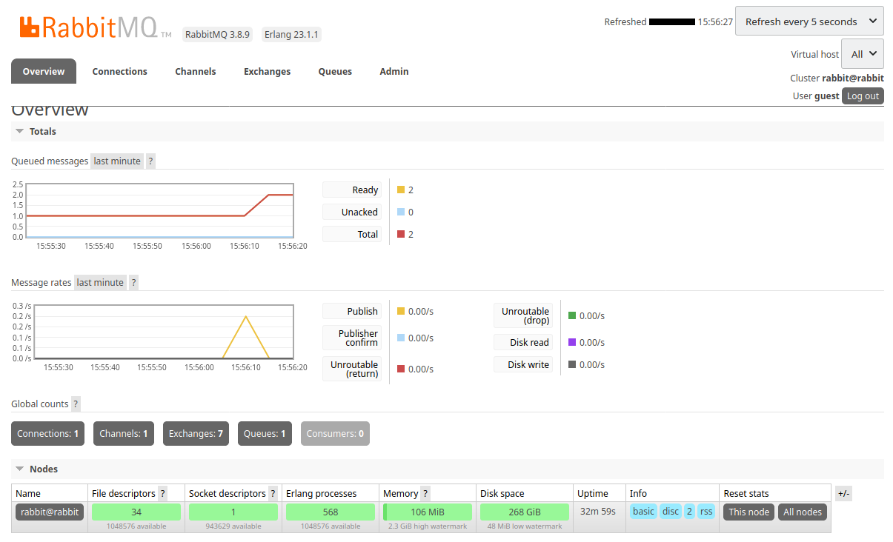
Click the name of the publisher queue :
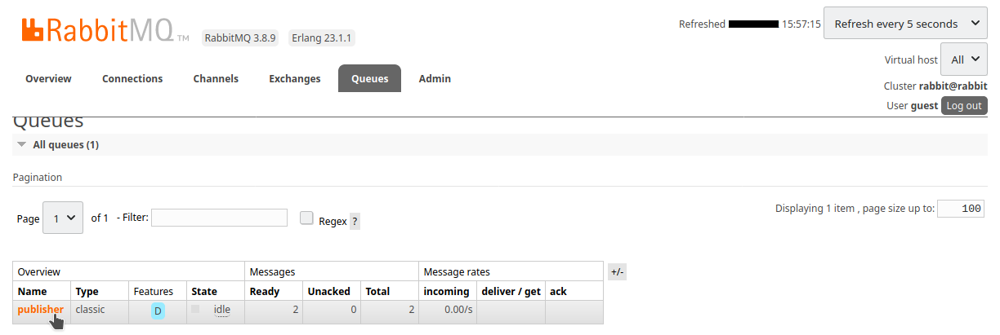
We can consult the pending messages :
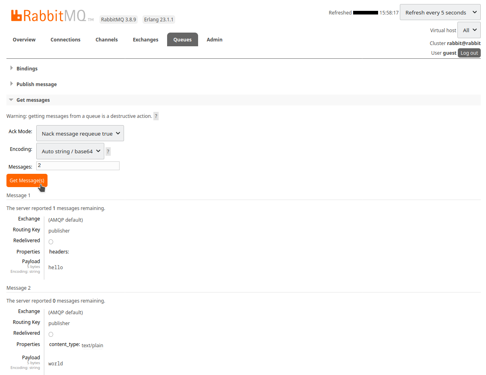
We will consume the messages with the Node application :
const HOST = process.env.RABBIT_HOST
const PORT = process.env.RABBIT_PORT
const USERNAME = process.env.RABBIT_USERNAME
const PASSWORD = process.env.RABBIT_PASSWORD;
(async function() {
const open = await amqplib.connect(`amqp://${USERNAME}:${PASSWORD}@${HOST}:${PORT}/`)
const channel = await open.createChannel()
await channel.assertQueue('publisher')
channel.consume('publisher', (msg) => {
if (msg !== null) {
console.log(msg.content.toString())
channel.ack(msg)
}
})
}())
We start the application in a new terminal window, the messages arrive :
$ make run-node-consumer
hello
world
As soon as the messages are retrieved, the queue is emptied :
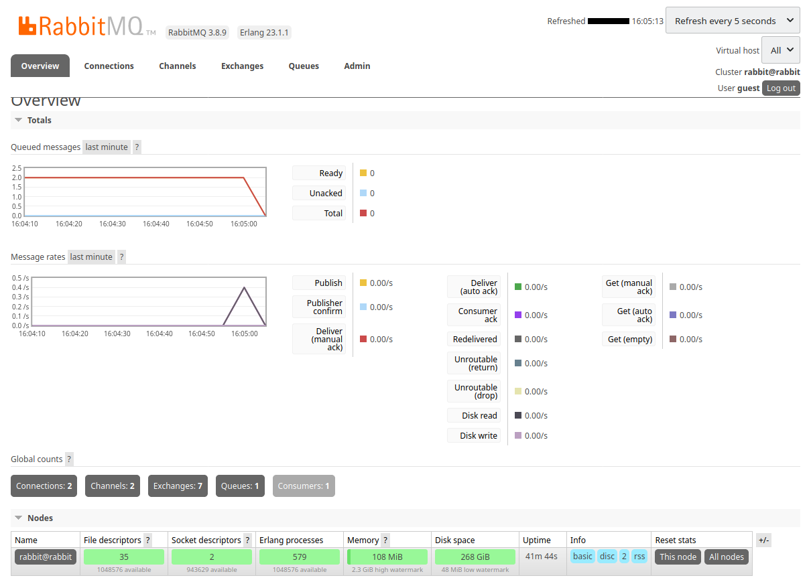
This test is finished, we can stop the docker containers :
# stop and remove the containers
$ make rm-rabbitmq-single
$ make rm-node-publisher
$ make rm-go-publisher
$ make rm-node-consumer
Using clustered RabbitMQ
RabbitMQ is an essential part for working asynchronously in a distributed system :
- An application sends some messages
- RabbitMQ stores these messages
- An other application consumes messages stored by RabbitMQ
In production, it is of course impossible to have only one working instance of RabbitMQ.
Because if it were to fail, the whole system would collapse and the data it contained would be lost.
It is therefore necessary to set up a cluster system with automatic content replication.
Our cluster will contain 3 RabbitMQ instances :
- A
rabbitinstance available on http://localhost:8000 - A
mirror-1instance available on http://localhost:8001 - A
mirror-2instance available on http://localhost:8002
To create a cluster we must :
- Use a common cookie between all instances. This is the RABBITMQ_ERLANG_COOKIE
- Use a configuration file. This is the RABBITMQ_CONFIG_FILE
Here is our configuration file :
loopback_users.guest = false
listeners.tcp.default = 5672
cluster_formation.peer_discovery_backend = rabbit_peer_discovery_classic_config
cluster_formation.classic_config.nodes.1 = rabbit@rabbit
cluster_formation.classic_config.nodes.2 = rabbit@mirror-1
cluster_formation.classic_config.nodes.3 = rabbit@mirror-2
- This file defines the peer discovery mechanism. See Specifying the Peer Discovery Mechanism
- This file defines the nodes used. See Classic Peer Discovery Config
To create a cluster of 3 instances, we run this command :
$ make create-cluster
This is how this script starts the first instance :
$ docker run \
--rm \
--detach \
--net rabbitmq \
--env RABBITMQ_CONFIG_FILE=/config/rabbitmq \
--env RABBITMQ_ERLANG_COOKIE=the-cookie-id \
--hostname rabbit \
--name rabbit \
--publish 8000:15672 \
--volume ${PWD}/config/:/config/ \
rabbitmq:3-management
Data synchronization between instances is done using Classic Mirrored Queues.
We define the type of mirroring with the variable ha-mode.
ha meaning high availability.
We choose the nodes mode.
With this mode, the queue is mirrored to the nodes listed in node names. The nodes are listed with the ha-params parameter.
For mirroring, we choose a simple and automatic synchronization : "ha-sync-mode":"automatic"
We use the set_policy command of the rabbitmqctl executable to configure the cluster :
$ docker exec rabbit rabbitmqctl set_policy ha-all \
'.*' \
'{ "ha-sync-mode":"automatic", "ha-mode":"nodes", "ha-params":["rabbit@rabbit", "rabbit@mirror-1", "rabbit@mirror-2"] }' \
--priority 1 \
--apply-to queues
We connect to the rabbit instance at http://localhost:8000 :
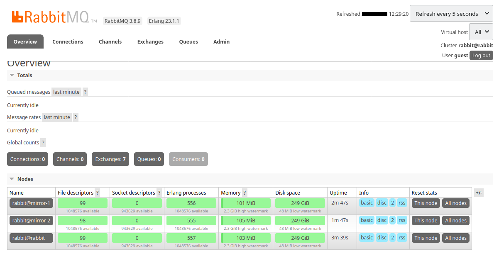
In 2 other tabs of my browser I can connect to :
mirror-1at http://localhost:8001mirror-2at http://localhost:8002
In the admin / policies part, we see that the ha-all policy is taken into account :
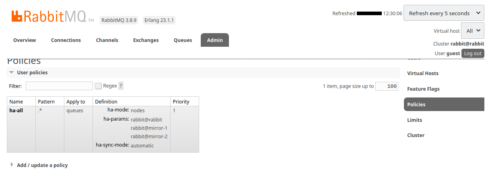
We will now publish a message using the Go application :
$ make run-go-publisher
We publish the message hello :
$ curl -X POST http://localhost:4000/publish/hello
The message is well received :
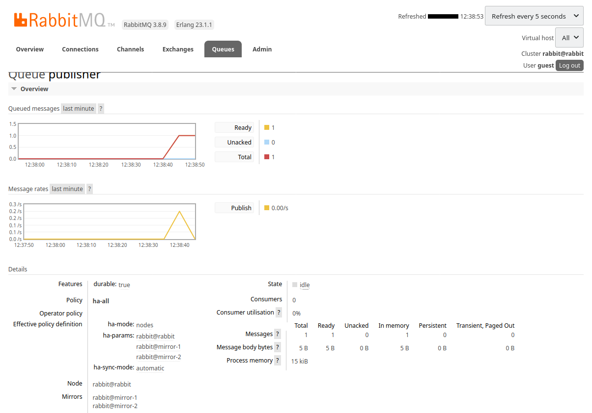
We simulate the crash of an instance by stopping it :
$ docker rm --force rabbit
The first tab of my browser, disconnected from the rabbit instance, stops refreshing.
But in my second tab, connected to mirror-1 at http://localhost:8001 we see the disconnection :
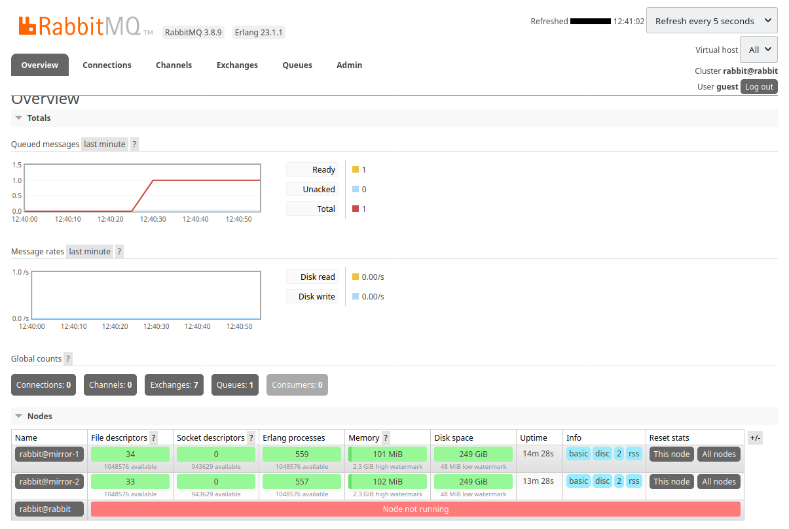
We click the name of the publisher queue :
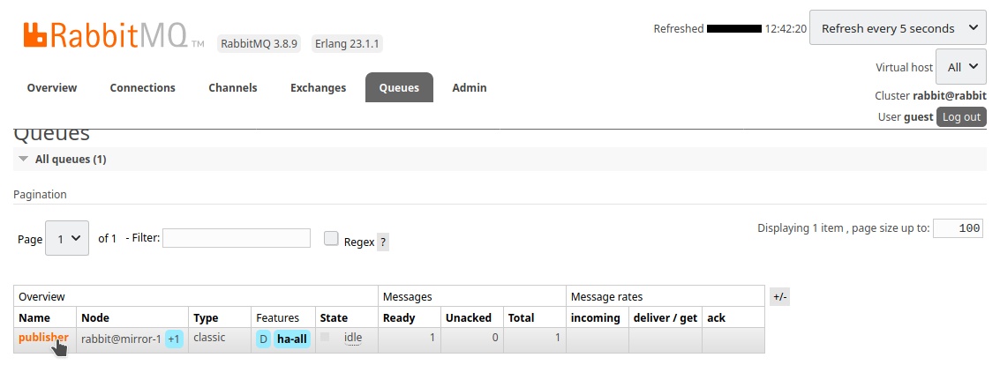
We observe that :
- The
rabbitnode has disappeared - The
mirror-1node has become the main node - The
mirror-2node is therefore the only mirror
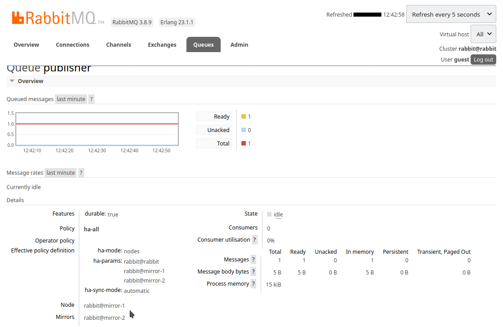
We force the shutdown of the Go application :
$ make rm-go-publisher
Now we relaunch the Go application by targeting the mirror-1 instance :
$ docker run \
--rm \
--net rabbitmq \
--env RABBIT_HOST=mirror-1 \
--env RABBIT_PORT=5672 \
--env RABBIT_USERNAME=guest \
--env RABBIT_PASSWORD=guest \
--name go-publisher \
--publish 4000:4000 \
go-publisher
We publish a new message :
$ curl -X POST http://localhost:4000/publish/world
The message is well received again :
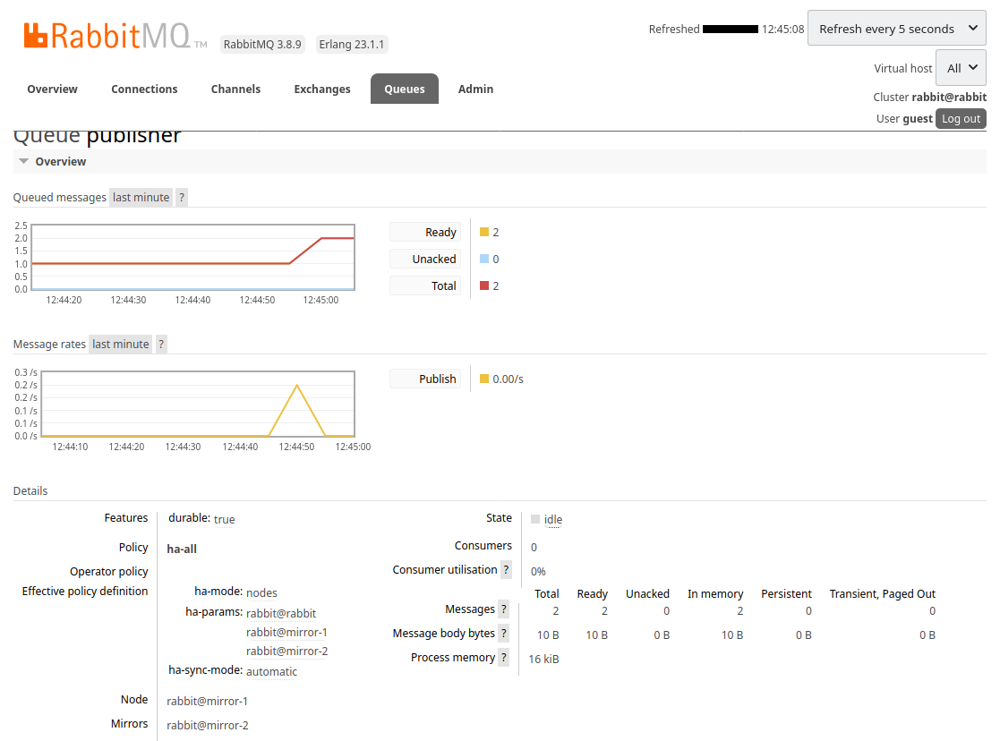
We manually restart the rabbit instance :
$ docker run \
--rm \
--detach \
--net rabbitmq \
--env RABBITMQ_CONFIG_FILE=/config/rabbitmq \
--env RABBITMQ_ERLANG_COOKIE=the-cookie-id \
--hostname rabbit \
--name rabbit \
--publish 8000:15672 \
--volume ${PWD}/config/:/config/ \
rabbitmq:3-management
The reconnection to the cluster is automatic :
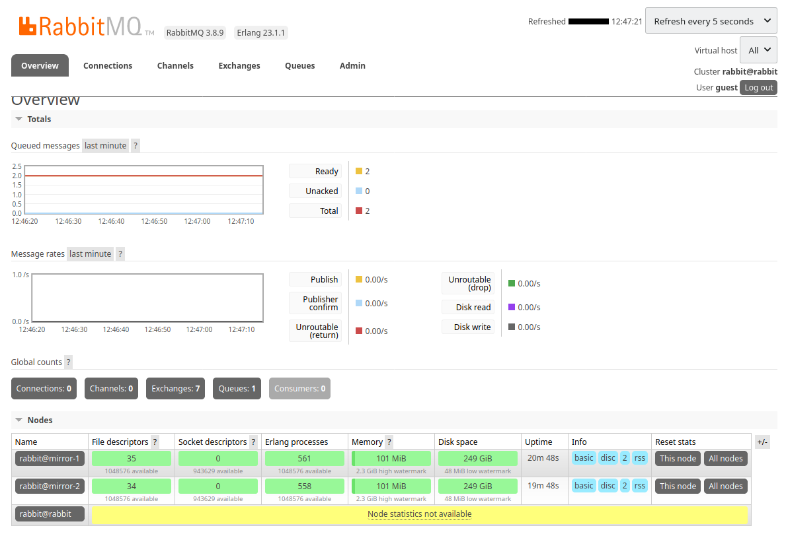
The connection is now effective. The instance has also been synchronized :
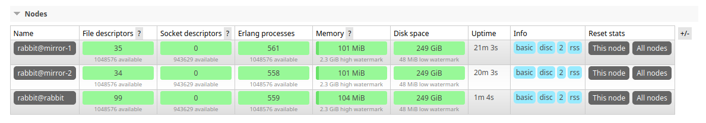
By going to see the details of the queue we can see that :
- The
mirror-1node is still the main node - The
mirror-2node is no longer the only mirror - The
rabbitnode is now a mirror
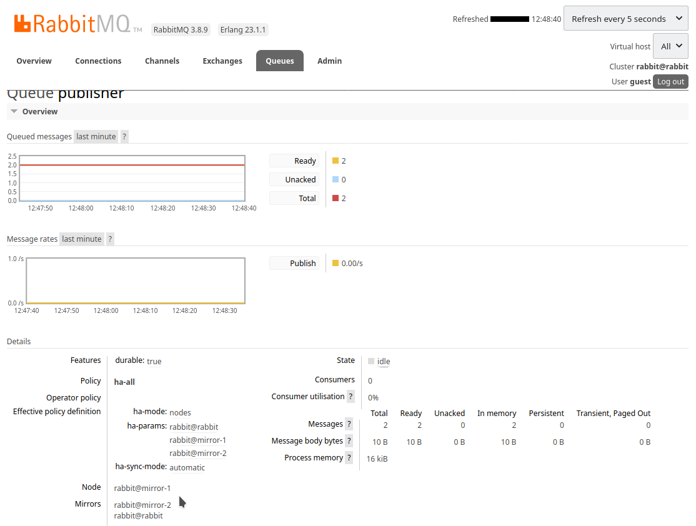
We start the consumer application, pointing to mirror-2 :
$ docker run \
--rm \
--net rabbitmq \
--env RABBIT_HOST=mirror-2 \
--env RABBIT_PORT=5672 \
--env RABBIT_USERNAME=guest \
--env RABBIT_PASSWORD=guest \
--name node-consumer \
node-consumer
hello
world
We have received the 2 messages. They were removed from the queue :
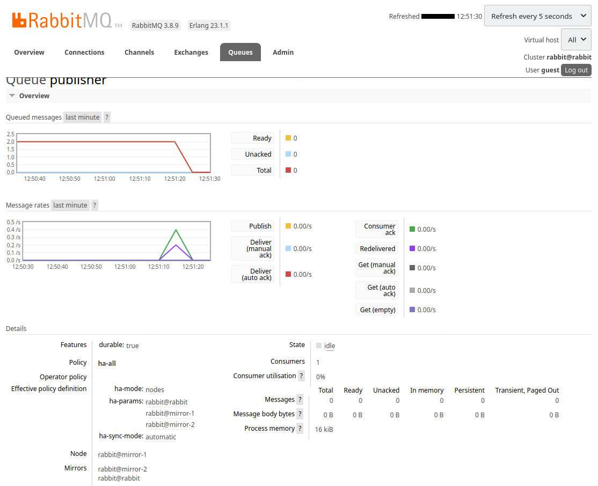
This test was done manually :
- We manually restarted the RabbitMQ intance which was stopped.
- We manually changed the node where we published a new message.
We are therefore missing 2 essential parts for the cluster to be functional :
- An orchestrator that automatically manages the startup of containers
- A discovery service that routes messages to active containers
But these points are outside the scope of this article.
The demonstration is over. We can delete our cluster with this command :
$ docker rm --force rabbit mirror-1 mirror-2 go-publisher node-consumer